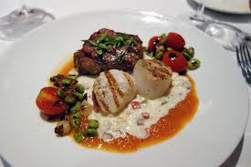

Cedar Rapids has great food options! Whether you're looking for fine dining, tastes that reminds you of food your grandmother made, or a great cup of coffee, Cedar Rapids has what you're looking for!
